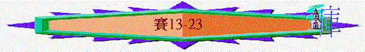

|
在 黑 暗 時 代 中 的 信 息（1-66） |
|||||
|
在變質國度中的斥責 |
在君亡噩訊中的異象 |
在無助孤身中的應許 |
在爭戰世界中的預言 |
在危難困境中的經歷 |
在暗淡前景中的安慰 |
|
1-5 |
6 |
7-12 |
13-35 |
36-39 |
40-66 |
四.在爭戰世界中的預言(13-35)
「亞哈斯王崩的那年，就有以下的默示：」14:28
＊時期：亞哈斯後期至希西家作王初期(14:28)
＊背景：亞述國興起，正攻擊列邦
＊結構：13-23『論ｘｘ默示』對象是個別的邦國；
針對他們不仰望主-->在爭戰氣氛下的預言
24-25『禍哉．．．』對象是整體世界；
針對世代的不義 -->在不義世界下的審判
1.在爭戰氣氛下的預言(13-23)----針對他們不仰望主
「亞述王撒珥根打發他珥探到亞實突的那年，他珥探就攻打亞實突，將城攻取。」20:1
A.關乎巴比倫之預言(13:1-14:23)
∼很奇怪，當時列邦受亞述的威脅，但先知卻將巴比倫(當時亞述帝國才是最強的帝國)放在預言信息之先，或許神已知道將來真正使猶大國亡國的是巴比倫，真正統管列邦才是她
a.關乎巴比倫國(13)
∼迦勒底人即巴比倫人
(1)她的光景
『巴比倫常來為列國的榮耀，為迦勒底人所矜誇的華美．．．．』13:19
(2)神的定意
『．．．．為要成就我怒中所定的。』13:3
(3)她的結局
『我必激動瑪代人來攻擊他們．．．．』13;17
『其內必永無人煙，世世代代無人居住．．．．』13:20
b.關乎巴比倫王（14:1-23）
(1)他的問題
『．．．．我要昇到天上，我要高舉我的寶座在神眾星以上．．．．』14:13
(2)神的定意
『我必使巴比倫為箭豬所得、又變為水池•我要用滅亡的掃帚掃淨他•這是萬軍之耶和華說的。』14:23
(3)他的命運
『然而你必墜落陰間，到坑中極深處』14:15
「明亮之星，早晨之子啊，你何竟從天墜落？你這攻敗列國的何竟被砍倒在地上？你心裡曾說：我要升到天上；我要高舉我的寶座在神眾星以上；我要坐在聚會的山上，在北方的極處。」14:12-13
「耶穌對他們說：「我曾看見撒但從天上墜落，像閃電一樣。」路10:18
「扔在無底坑裡，將無底坑關閉，用印封上，使他不得再迷惑列國。等到那一千年完了，以後必須暫時釋放他。」啟20:3
「初入教的不可作監督，恐怕他自高自大，就落在魔鬼所受的刑罰裡。」提前3:6
∼「明亮之星」、「早晨之子」在迦南神話中，有一神負責管理晨光，他的兒子晨星因驕傲卻奪去高神寶座，結果被日神擲下
∼「聚會的山」、「北方的極處」：神話中是諸神聚集議決世界命運之地方
∼而很多解經家也認為此處除講述巴比倫驕傲被神擊打外，也預表了撒但，牠同樣驕傲，被神擊打，至終會扔在無底坑中
B.論亞述之預言(14:24-27)
a.她的光景
『他加的軛．．．．他加的重擔』14:25
∼亞述雖是神手中管教的工具，但他們對以色列卻過份攻擊，將加重的軛放在神的選民中
b.神的定意
『萬軍之耶和華起誓說，我怎樣思想，必照樣成就．．．．』14:24
『萬軍之耶和華既然定意，誰能廢棄呢．．．．』14:27
c.她的結局
『就是在我地上打折亞述人，在我山上將他踐踏．．．．』14:25
∼這段是神擊打亞述，使以色列人得解脫的預言
∼而此段預言可能也指公元前701年，亞拿基立統領大軍獻猶大，卻被神擊打敗亡
C.論非利士之預言(14:28-32)
a.她的光景
『非利士全地阿，不要因擊打你的杖折斷就喜樂．．．．』14:29
∼似乎非利士人有幸災樂禍的心
b.她的結局
『．．．．因為有煙從北方出來，他行伍中並無亂隊的』14:31
∼「北方的煙」應指亞述大軍
c.真正倚靠
「可怎樣回答外邦（或指非利士）的使者呢？必說：耶和華建立了錫安；他百姓中的困苦人必投奔在其中。」14:32----勿靠外邦
∼當時非利士人想聯合其它國背叛亞述，而先知卻呼籲南國不要隨非利士人的路線，要倚靠耶和華
D.論摩押之預言(15-16)
∼摩押位於死海東面，也是羅得的後裔，一向是以色列人的敵人
a.她的問題
『我們聽說摩押人驕傲，是極其驕傲．．．．』16:6
b.神的定意
『但現在耶和華說，三年之內，照雇工的年數，摩押的榮耀，與他的群眾，必被藐視．．．』16:14
c.她的結局
『一夜之間，摩押的亞珥，變為荒廢．．．．』15:1
『因為希實本的田地，和西比瑪的葡萄樹，都衰殘了．．．．』16:8
『．．．．餘剩的人，甚少無幾』16:14
∼亞哈斯王崩的那年約為主前705年，而亞述西拿基立於公元前701年已佔領摩押，的確在三年之內，摩押失去了榮耀
∼「亞謝」或許指首都，「基珥」摩押南部的主要保障
∼「希實本」本屬流便支派，但後來為摩押佔？
E.論大馬色之預言(亞蘭)(17:1-3)
∼亞蘭建都與大馬色，想與以色列聯盟抗亞述，至終要神審判兩國家
a.她的光景
『以法蓮不再有保障，大馬色不再有國權．．．．』17:3
b.神的定意
『．．．．亞蘭所剩下的，必像以色列的榮耀消滅一樣，這是萬軍之耶和華說的。』17:3
c.她的結局
『．．．．大馬色已被廢棄，不再為城，必變作亂堆』17:1
F.論以色列的預言(17:4-14)
∼以色列忘記神，卻倚靠亞蘭，仰望偶像，至終受神管教
a.她的問題
「因你忘記救你的神，不記念你能力的磐石；所以，你栽上佳美的樹秧子，插上異樣的栽子。」17:10
b.神的定意
「其間所剩下的不多，好像人打橄欖樹，在儘上的枝梢上只剩兩三個果子；在多果樹的旁枝上只剩四五個果子。這是耶和華以色列的神說的。」17:6
c.她的結果
『到那日雅各的榮耀必至枵薄．．．．』17:4
『在那日他們的堅固城，必像樹林中和山頂上所撇棄的地方．．．．』17:9
∼在主前722年，以色列亡於亞述王撒珥根，而他們像橄欖樹被採摘後，只利下
d.她的反醒
「當那日，人必仰望造他們的主，眼目重看以色列的聖者。他們必不仰望祭壇，就是自己手所築的，也不重看自己指頭所做的，無論是木偶是日像。」17:7-8
∼「木偶」應指亞舍拉柱像，被稱為巴力的女神(迦南女神)，以色列人素來仰望這些假神，但最終經神審判後，必仰望天上的真神
e.神的公義
『列邦奔騰，好像多水滔滔，但神斥責他們．．．．他們就沒有了。這是擄掠我們之人
所得的分，是搶奪我們之人的報應。』17:13-14
G.論埃及之預言(18-20)
a.古實王朝(18)
∼當時古實王朝統治埃及，所以埃及地可稱古實，埃及也受亞述的威脅，也欲與猶大結盟
(1)她的光景
「唉！古實河外翅膀刷刷響聲之地，差遣使者在水面上，坐蒲草船過海。先知說：你們快行的使者，要到高大光滑的民那裡去。自從開國以來，那民極其可畏，是分地界踐踏人的；他們的地有江河分開。」18:1-2
∼「翅膀刷刷響
聲之地」可能指蟬或蚊蠅滋生之地，可指形容船隻靠在一起的聲音
∼當時可能有猶大的使者欲上埃及求結盟，但以賽亞卻反對他們的行動
∼而「高大光滑的民」應形容古實人身材高大，「分地界踐踏人」形容國勢之大
∼古實是古代北非地區的人(今日的蘇丹地區)，而國王皮耶曾征服埃及，建立第二十五王朝，但在主前671年，亞述入侵埃及，古實人被逐出之後，古實王朝正式退出埃及
(2)祂的定意
『耶和華對我這樣說．．．．他必用鐮刀削去嫩枝．．．．』18:4-5
(3)她的結局
『．．．．他們的地有江河分開，他們必將禮物奉給萬軍之耶和華．．．．』18:7
b.埃及王朝(19-20)
「論埃及的默示：看哪，耶和華乘駕快雲，臨到埃及。埃及的偶像在他面前戰兢；埃及人的心在裡面消化。」19:1
∼此段不單是預言古實統治期間的王朝，也是講述埃及全地將來的景況
(1)她的現況
(A)充滿偶像之地
「埃及人的心神必在裡面耗盡；我必敗壞他們的謀略。他們必求問偶像和念咒的、交鬼的、行巫術的。」19:3
(B)充滿謀士之地
「瑣安的首領極其愚昧；法老大有智慧的謀士，所籌劃的成為愚謀。你們怎敢對法老說：我是智慧人的子孫，我是古王的後裔？」19:11
(C)別國仰望之國
「以色列人必因所仰望的古實，所誇耀的埃及，驚惶羞愧。「那時，這沿海一帶的居民必說：『看哪，我們素所仰望的，就是我們為脫離亞述王逃往求救的，不過是如此！我們怎能逃脫呢？』」」20:5-6
(2)神的定意
「猶大地必使埃及驚恐，向誰提起猶大地，誰就懼怕。這是因萬軍之耶和華向埃及所定的旨意。」19:17
(3)她的結局
(A)宗教沒落
「埃及人的心神必在裡面耗盡；我必敗壞他們的謀略。他們必求問偶像和念咒的、交鬼的、行巫術的。」19:3
(B)暴王統治
「我必將埃及人交在殘忍主的手中；強暴王必轄制他們。這是主萬軍之耶和華說的。」19:4
(C)自然災難
「海中的水必絕盡，河也消沒乾涸。江河要變臭；埃及的河水都必減少枯乾。葦子和蘆荻都必衰殘；靠尼羅河旁的草田，並沿尼羅河所種的田，都必枯乾。莊稼被風吹去，歸於無有。」19:5-7
∼河水乾旱，魚業也大受打擊
(D)首領無能
「瑣安的首領極其愚昧；法老大有智慧的謀士，所籌劃的成為愚謀。你們怎敢對法老說：我是智慧人的子孫，我是古王的後裔？」19:11
∼瑣安、挪弗是尼羅河三角洲的要城
(E)歸向真神
「當那日，埃及地必有五城的人說迦南的方言，又指著萬軍之耶和華起誓。有一城必稱為「滅亡城」。當那日，在埃及地中必有為耶和華築的一座壇；在埃及的邊界上必有為耶和華立的一根柱。這都要在埃及地為萬軍之耶和華作記號和證據。埃及人因為受人的欺壓哀求耶和華，他就差遣一位救主作護衛者，拯救他們。」19:18-20
∼「迦南的方言」應指埃及人將來會用以色列人的言語敬拜神
∼「滅亡之城」可能指太陽城，埃及人敬拜太陽之地，但有一日，也被毀，因他們要敬拜耶和華
(F)神必施恩
「當那日，以色列必與埃及、亞述三國一律，使地上的人得福；因為萬軍之耶和華賜福給他們，說：「埃及我的百姓，亞述我手的工作，以色列我的產業，都有福了！」」19:24-25
(4)先知見證----埃及蒙羞
「亞述王撒珥根打發他珥探到亞實突的那年，他珥探就攻打亞實突，將城攻取。那時，耶和華曉諭亞摩斯的兒子以賽亞說：「你去解掉你腰間的麻布，脫下你腳上的鞋。」以賽亞就這樣做，露身赤腳行走。耶和華說：「我僕人以賽亞怎樣露身赤腳行走三年，作為關乎埃及和古實的預兆奇蹟。照樣，亞述王也必擄去埃及人，掠去古實人，無論老少，都露身赤腳，現出下體，使埃及蒙羞。」20:1-4
「「那時，這沿海一帶的居民必說：『看哪，我們素所仰望的，就是我們為脫離亞述王逃往求救的，不過是如此！我們怎能逃脫呢？』」」20:6
∼主前713非利士的亞實突背叛亞述，主前711年被亞述統治
∼先知要用露身赤腳三年，表達埃及人將蒙羞
∼而他們素來所仰望的埃及至終也自身難保！
H.論海旁曠野的預言(再論巴比倫)(21:1-10)
「論海旁曠野的默示：有仇敵從曠野，從可怕之地而來，好像南方的旋風，猛然掃過。」21:1
∼海旁曠野是指靠近波斯灣的巴比倫，而主前539年巴比倫被瑪代波斯所滅
a.她的問題
「看哪，有一隊軍兵騎著馬，一對一對的來。他就說：巴比倫傾倒了！傾倒了！他一切雕刻的神像都打碎於地。」21:9
b.神的定意
「令人悽慘的異象已默示於我。詭詐的行詭詐，毀滅的行毀滅。以攔哪，你要上去！瑪代啊，你要圍困！主說：我使一切歎息止住。」21:2
∼「以攔」當時波斯屬地，神一早已定意瑪代波斯上傾倒巴比倫
c.她的結局
(1)令人驚惶的結局
「所以，我滿腰疼痛；痛苦將我抓住，好像產難的婦人一樣。我疼痛甚至不能聽；我驚惶甚至不能看。」21:3
∼先知看見異象，也感受巴比倫滅亡帶來的驚惶與痛苦
(2)國家傾倒的結局(21:9)
I.論度瑪的預言(以東)(21:11-12)
「論度瑪的默示：有人聲從西珥呼問我說：守望的啊，夜裡如何？守望的啊，夜裡如何？守望的說：早晨將到，黑夜也來。你們若要問就可以問，可以回頭再來。」21:11-12
∼西珥即以東，度瑪意思沉寂，也是指以東，而「夜」可能表達災難、荒涼，他們期望早晨來到，國家光明，但黑夜卻很快來臨
∼「可以回頭」可能暗示以東人可以回轉
J.論亞拉伯的預言(底但、提瑪、基達)(21:13-17)
「論亞拉伯的默示：底但結伴的客旅啊，你們必在亞拉伯的樹林中住宿。提瑪地的居民拿水來，送給口渴的，拿餅來迎接逃避的。因為他們逃避刀劍和出了鞘的刀，並上了弦的弓與刀兵的重災。主對我這樣說：「一年之內，照雇工的年數，基達的一切榮耀必歸於無有。」21:13-16
∼底但、提瑪、基達是在阿拉伯境內，它們是控制商路邊境的城巿，但他們有一日要大逃亡，榮耀失去
K.論耶路撒冷的預言(22)
「論異象谷的默示：有什麼事使你這滿城的人都上房頂呢？」22:1
∼「異象谷」是指耶路撒冷西南的欣嫩子谷，又稱殺戮谷
∼此段是預言耶路撒冷將來的景況
a.她的問題
(1)不仰望主
「你們看見大衛城的破口很多，便聚積下池的水，又數點耶路撒冷的房屋，將房屋拆毀，修補城牆，又在兩道城牆中間挖一個聚水池可盛舊池的水，卻不仰望做這事的主，也不顧念從古定這事的。」22:9-11
∼他們用盡各方法保護自己地方，卻不仰望他們的神
(2)不知悔改
「當那日，主萬軍之耶和華叫人哭泣哀號，頭上光禿，身披麻布。誰知，人倒歡喜快樂，宰牛殺羊，吃肉喝酒，說：我們吃喝吧！因為明天要死了。」22:12-13
b.神的定意
「萬軍之耶和華親自默示我說：這罪孽直到你們死，斷不得赦免！這是主萬軍之耶和華說的。」22:14
c.她的結局
(1)城被攻破
「因為主萬軍之耶和華使「異象谷」有潰亂、踐踏、煩擾的日子。城被攻破，哀聲達到山間。」22:5
(2)人受羞辱
「以攔帶著箭袋，還有坐戰車的和馬兵；吉珥揭開盾牌。」22:6
「他去掉猶大的遮蓋。那日，你就仰望林庫內的軍器。」22:8
∼以攔、吉珥應是投效亞述的軍隊
∼去掉猶大的遮蓋代表他們可能赤身受羞辱
d.人的例證
(1)舍伯那終蒙羞
「主萬軍之耶和華這樣說：「你去見掌銀庫的，就是家宰舍伯那，對他說：『你在這裡做什麼呢？有什麼人竟在這裡鑿墳墓，就是在高處為自己鑿墳墓，在磐石中為自己鑿出安身之所？」22:15-16
「他必將你滾成一團，拋在寬闊之地，好像拋球一樣。你這主人家的羞辱，必在那裡坐你榮耀的車，也必在那裡死亡。我必趕逐你離開官職；你必從你的原位撤下。』」22:18-19
∼舍伯那是管財的官員，他自持自己死後可以在高處被葬，他也可能支持猶大與外邦聯盟，最終失去職位與榮耀
∼舍伯那就是南國一個好的例證，人不仰望神，終必蒙羞
(2)以利亞敬將取代
「到那日，我必召我僕人希勒家的兒子以利亞敬來，將你的外袍給他穿上，將你的腰帶給他繫緊，將你的政權交在他手中。他必作耶路撒冷居民和猶大家的父。我必將大衛家的鑰匙放在他肩頭上。他開，無人能關；他關，無人能開。我必將他安穩，像釘子釘在堅固處；他必作為他父家榮耀的寶座。」22:20-23
∼以利亞敬會代替舍伯那作家宰
∼大衛家的鑰匙代表他擁有權柄(可能也代表能掌管收藏國家錢財的權柄)
L.論推羅的預言(23)
「論推羅的默示：他施的船隻都要哀號；因為推羅變為荒場，甚至沒有房屋，沒有可進之路。這消息是從基提地得來的。」23:1
∼他施的船隻應指西班牙南岸的他施返回推羅的商船
∼基提是推羅的殖民地
a.她的問題
「是萬軍之耶和華所定的！為要污辱一切高傲的榮耀，使地上一切的尊貴人被藐視。」23:9
b.神的定意
「是萬軍之耶和華所定的！為要污辱一切高傲的榮耀，使地上一切的尊貴人被藐視。」23:9
c.她的結局
(1)地必荒涼
「（看哪，迦勒底人之地向來沒有這民，這國是亞述人為住曠野的人所立的。現在他們建築戍樓，拆毀推羅的宮殿，使他成為荒涼。）」23:13
∼「迦勒底人」指亞述，「戍樓」指攻城用的設備，此處指亞述人攻擊推羅，使她荒涼
(2)得神眷顧
「到那時，推羅必被忘記七十年，照著一王的年日。七十年後，推羅的景況必像妓女所唱的歌：你這被忘記的妓女啊，拿琴周流城內，巧彈多唱，使人再想念你。七十年後，耶和華必眷顧推羅，他就仍得利息（原文作雇價；下同），與地上的萬國交易（原文作行淫）。」23:15-17